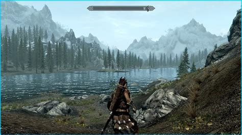

The Release of Skyrim
It is the fifth main installment in The Elder Scrolls series, following The Elder Scrolls IV: Oblivion (2006), and was released worldwide for Windows, PlayStation 3, and Xbox 360 on November 11, 2011. Skyrim was developed using the Creation Engine. The team opted for a unique and more diverse open world than Oblivion's Imperial Province of Cyrodiil.Upon release, the game received critical acclaim, with praise for its character advancement, world design, visuals, and the ability to dual-wield in combat. Criticism targeted the melee combat, dragon battles, and numerous technical issues at launch. The game shipped over seven million units within the first week of its release and had sold over 20 million units by June 2013. It is considered one of the greatest video games ever made and is credited as influencing later fantasy and open world games.
The Big Plot
Main story
You begin as a prisoner being taken to execution during a civil war between, The Imperial Legion and The Stormcloaks. Just as youre about to be executed, a colossal dragon named Alduin attacks, allowing you to escape. This marks the dragons mysterious return to Skyrim after centuries of absence. You soon discover that you are Dragonborn — a mortal with the soul of a dragon. Dragonborn can absorb the souls of slain dragons and use Shouts, ancient dragon magic called Thu’um. You are summoned by the Greybeards, monks of the Voice who live atop High Hrothgar, and they confirm your identity. Alduin is no ordinary dragon. According to the Elder Scrolls and Nordic prophecy, he is the World-Eater, destined to bring about the apocalypse and remake the world. But Alduin has returned early—resurrecting dead dragons, amassing power, and terrorizing Skyrim. You recover the Elder Scroll from the Dwemer ruins of Blackreach. Using it at the ancient battleground Skuldafn, you witness the moment ancient heroes used a powerful shout—Dragonrend—to force Alduin to feel mortality. To reach Alduin, you need the full cooperation of Skyrims warring factions. The Greybeards (or the Blades) help arrange a tense, temporary truce between Imperials and Stormcloaks so you can continue your mission.Alduin is defeated once and for all. The dragons acknowledge your victory, and Paarthurnax guides the remaining dragons toward a new path, free from Alduins rule. You return to Skyrim as the true Dragonborn, a legendary figure with power over the very language of creation.
Dawnguard
Dawnguard centers on a rising threat involving ancient vampires and a powerful prophecy. As the Dragonborn, you become entangled in a conflict between two factions: The Dawnguard, a reformed group of vampire hunters preparing to confront a looming danger. They seek your help to stop the vampires from carrying out a plan that could drastically alter Skyrim. The Volkihar vampire clan, a powerful and secretive vampire family pursuing a legendary prophecy tied to an ancient artifact and a long-lost figure. Their ambitions, if realized, would change the balance of the world. Youre drawn into this conflict after encountering signs that vampires are becoming increasingly bold across Skyrim. This leads you to a mysterious discovery that sets the entire story in motion. Throughout the expansion you choose which side to support—the Dawnguard or the Volkihar—and your decision shapes the direction and tone of the entire adventure.
Dragonborn
In Dragonborn, the Dragonborn is drawn to the remote island of Solstheim, a rugged land far to the northeast of Skyrim. Strange events and hostile forces begin targeting you, all tied to whispers of another powerful figure connected to the dragonblood.A mysterious and ancient threat emerges—someone with a connection to dragons and the power of the Voice that rivals your own. Their influence reaches across Solstheim, affecting the minds and actions of its people.
Gameplay
At the beginning of the game, players select their character's gender and race, with 10 choices for the latter, including races of humans and fantasy races such as elves and orcs. The player chooses the character's appearance; this is not necessarily permanent, however, as an in-game mechanic allows for changing the appearance later. Characters have three primary attributes: health is how much damage the character can take before dying, magicka is depleted to cast spells, and stamina allows the character to perform heavy "power attacks" or sprint. A status bar for each attribute appears onscreen when the attribute falls below its maximum value. Attributes regenerate over time and can be refilled faster by drinking potions, casting regenerative spells, or through various enchantments. Characters gain experience indirectly, via leveling up skills. The 18 skills are divided evenly among the three schools of combat, magic, and stealth. Each skill has its own experience bar, which increases when the character performs an action in-game related to the skill. For example, crafting a dagger increases the Smithing skill, and dealing damage with a bow increases the Archery skill. When a skill's experience bar fills, the skill levels up and the bar is reset. After enough skills level up, the character levels up, enabling the player to increase the maximum value of one of the three attributes and providing a perk point. Perk points can be spent immediately on a skill-specific perk or stored for later use.